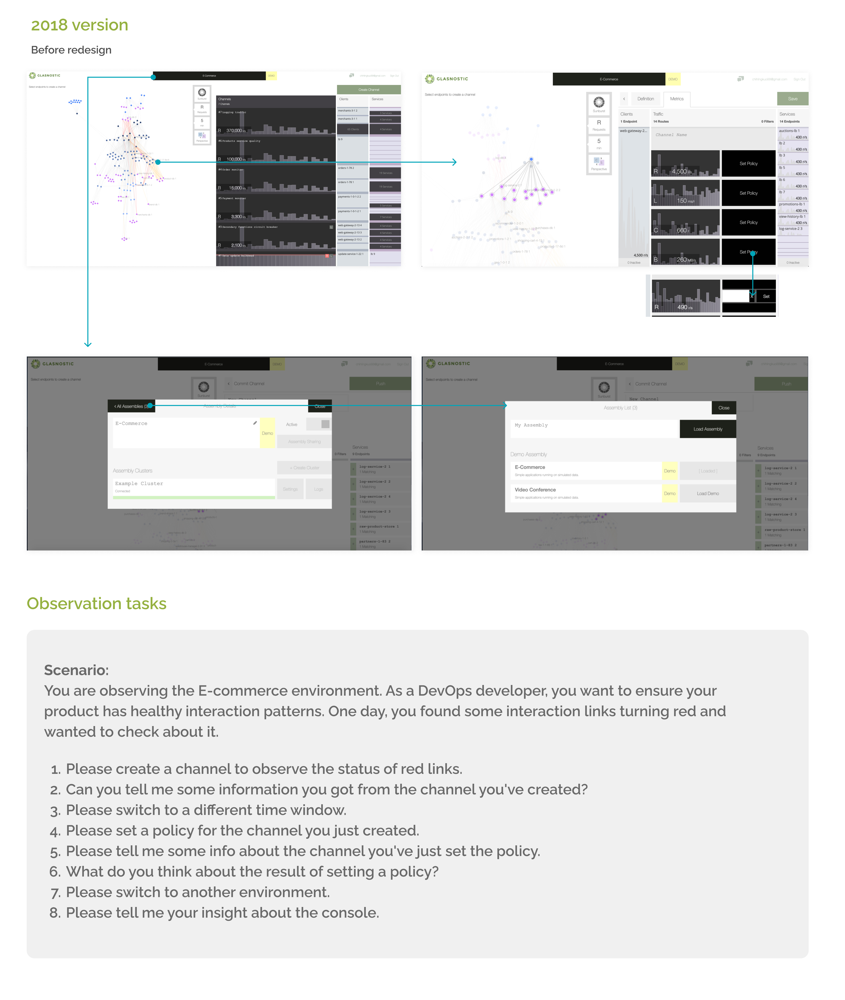
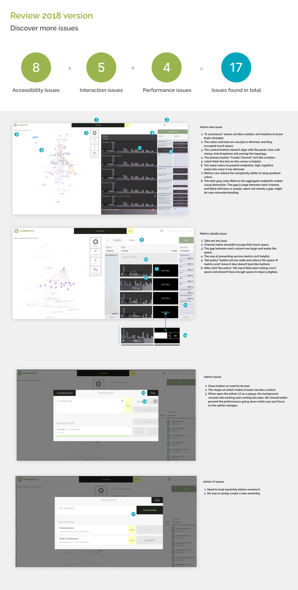

GOAL
Can we improve the Glasnostic console UI to be more intuitive and user-friendly with low-cost changes?
Team
Chihling Kuo (Me, UX/UI designer)
Willy Liu (Front-end Engineer, Phase 1)
Olga Andriychenko (Front-end Engineer, Phase 2&3)
Ying-Ping Lin (Front-end Engineer, Phase 3)
Zong-Jhe Wu (Front-end team leader)
TIMELINE
Each phase average has:
3 weeks for design
2 weeks for implementation
DATE
Phase 1: Jun 2020
Phase 2: Feb 2021
Phase 3: July 2022
Three phases
Phase 1: Improve topology, metrics, and navigation bar
Phase 2: Update the light theme color, and add a dark theme
Phase 3: Improve topology links, legend, and layout
TOOL
User Observation
Feedback grid
Prioritization grid
UX competitive analysis
Color-blind simulation
Lo-Hi fidelity prototype
A/B Testing
Contribution
UX analysis
UI design
Design system for two themes
Design spec
Review PR
CONTEXT
The Glasnostic console was designed in 2018 by a previous designer. The CEO and CTO are uncomfortable with its topology graphic. Engineer colleagues feel the console overall looks counterintuitive. Moreover, since we are a startup company, the timeline is rapid. Therefore, only low-cost changes are acceptable at the current moment.
What is the problem?
Our console is counterintuitive, learning from our potential investor's or customers' reactions. They can barely understand what our console communicates on their own. -Tobias, CEO at Glasnostic
Design process
Business constraints
Before heading you to my design methods, I want to remind you we do have some business constraints. Since we are a startup company, we are a small team and need to handle tasks in a rapid time. Moreover, Glasnostic doesn't have any formal users yet at this moment.
1.Observe and define the problem

2018 version and observation tasks
Observation and collect feedback
Since we don't have any formal users, I can only observe my colleagues.
I sit next to my colleague and observe them one by one.
Then, ask them to do the tasks.
The benefit of doing the observation is that we can know HOW they interact with the current UI and WHAT the obstacles are to completing the tasks.
Nevertheless, the downside of observing my colleagues is that they are not novice users.
Therefore, I couldn't catch the natural behavior of novice users.
After the observation, I organized their behavior, feedback, and ideas into a feedback grid. According to the observation records, most of my colleagues became slower at reading the channel table. This is because the gap between each channel is too large and has similar colors to aggregate endpoints info. It dazzles their eyes. In addition, some are unsure why the UI needs to use five different colors to display the client's endpoints.
Discover more issues
I reviewed the console and found 17 issues, most of them are accessibility issues.

Prioritization grid
I realized there are tons of ideas to do to improve the Glasnostic console. I started to list all potential solutions and ideas from feedback into a prioritization grid. Then, I ask frond-end colleagues to determine the feasibility of these possible solutions. Later, I discuss the priority with the CEO. We separated solutions into 3 phases and decided to start from the highly feasible solutions.

2.Ideation
Competitive Analysis
I choose Dynatrace, Datadog, and New Relic as direct competitors which provide similar products and focus on similar groups.
On the other hand, I choose Azure DevOps, Grafana, and Google analytics as indirect competitors.
Although Azure DevOps focuses on similar groups, it provides different services, focusing more on team collaboration and management.
Therefore, it is an indirect competitor to us.
Key findings:
- Most of their product matches branding.
- Most of them have both the side menu and the top menu.
- Almost all graphics have a legend.
- All topology graphics show arrows to indicate the communication directions.
UX competitive analysis
3.Prototype & Test
Phase 1
Improve topology, metrics, and navigation bar.

Accessibility of colors
Topology and metrics
I start with reducing the colors of the endpoints.
To help reduce the cognitive load, let's not make it looks complex. Furthermore, the CEO found our glossary of Clients and Services is not straightforward. So he changes the words to call it Source and Destinations.
Eventually, we only need three colors to present endpoints—one for source, one for destinations, and the last for the mid-end points.
Moreover, I care about accessibility. For example, if you check the blue and purple with a color-blind simulator, you'll realize you can't distinguish these two colors. Therefore, we must need to avoid using them together.
To show the branding on the console, I decided to use the green colors of our logo. So I use Stark to simulate color-blind vision and double-check if these green colors can easily distinguish with color-blind vision. I intend to make one green color approaching yellow and another towards blue. Another good tool is Adobe color wheels to check if these colors pass accessibility.
Finally, I compared the endpoints' green colors with link line colors.

Top navigation variants
Top navigation
We need to move the current control buttons to have a cleaner layout.
It shouldn't be like a wall between graphs and metrics. A better place is to put it into the top navbar.
We use icons to be our control buttons.
However, these icons are not general to see, so don't forget to provide a tooltip or text to explain what it is. When a user hovers over the buttons, the dropdown expands and can see the text on the top.
One more bonus change is that I made the user can switch the environment directly from the dropdown. There is no need to show a pop modal; it takes two steps to switch to another environment.

Top navigation variants
Switch classifier and legend
From my competitive analysis, almost every graph shows a legend which I agree we should have too.
However, at the moment, our topology merely has three colors of links. It's super simple. Users might not need to see it as always on the graph area. Therefore, after discussion with the CEO, we decide to add legend into the classifier setting drawer.
It's convenient for users. While choosing the classifier, the legend can immediately tell users what link colors mean in this classifier.
Phase 2
Update the light theme color, and add a dark theme.

Test, Reiterate, and Repeat
Redefine colors with elevation levels
Having a dark theme is my idea, and I insist on having it no matter how difficult the path is.
However, designing a new theme for the console is a big challenge for me because it has tons of elements and won't be simply tweaked the lightness of light theme colors. Besides, the original light theme metrics also need adjustment.
So I started by searching the methods how to build a theme:
- Research showed elevation levels are an excellent way to support reorganizing and reviewing the current theme.
- Break down every element on the console and determine its level. To prevent adding too many new colors, I checked the colors we already used and tried to reuse them again.
- Generate colors, apply colors by levels, and do the A/B testing with colleagues, then continue to reiterate and repeat.
Completing the design of two themes costs at least 20 versions and countless experiments in generating colors.
Nevertheless, I'm super happy with the outcome. It made our console a considerable difference.
2018 vs. 2021 version
Let's see the outcome of phase 1-2 completion.
Isn't it a vast difference?


Phase 3
Make legend extendable, improve topology links, and let the view panel be collapsible
In phase 3, we want to improve our service map to be more intuitive to read and add a bit of flexibility for users to control how much information they want to see. For example, the thickness of the link depends on the loads: a more load, a thicker link. And users can decide to see a simplified legend or a comprehensive legend. Furthermore, they can collapse the views metrics if they only want to observe the service map on the screen.
Extendable legend
Topology improvements

Topology links

Filexible panel
4.Final version

From 2018 to 2022 versions
Reflections
- What worked WELL?
I appreciate my colleagues, for allowing me to do the observation at the very beginning.
As a result, I collected lots of ideas and learned a lot from them.
I won't be able to accomplish the revision without their support.
Finally, I want to give a big thank to the front-end team. They are willing to share their ideas and determine the feasibility in every phase.
- What DIDN’T go well?
In phase 2, designing a new theme isn't a quick job.
I failed lots of times in generating new colors. After the design is confirmed, it also takes much time to prepare the spec and, review the PR, check every color on the stage.
I consumed more time than I expected.
- What might I try NEXT?
If we have more time, we should consider having the main side menu.
Also, provide a more flexible layout. Check our competitors, most of them allow users to choose what to show on their dashboard.
On the contrary, we don't let a user see metrics only. We always present a service map on the console.
I appreciate my colleagues, for allowing me to do the observation at the very beginning. As a result, I collected lots of ideas and learned a lot from them. I won't be able to accomplish the revision without their support. Finally, I want to give a big thank to the front-end team. They are willing to share their ideas and determine the feasibility in every phase.
In phase 2, designing a new theme isn't a quick job. I failed lots of times in generating new colors. After the design is confirmed, it also takes much time to prepare the spec and, review the PR, check every color on the stage. I consumed more time than I expected.
If we have more time, we should consider having the main side menu. Also, provide a more flexible layout. Check our competitors, most of them allow users to choose what to show on their dashboard. On the contrary, we don't let a user see metrics only. We always present a service map on the console.